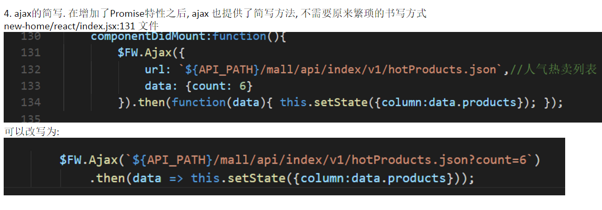
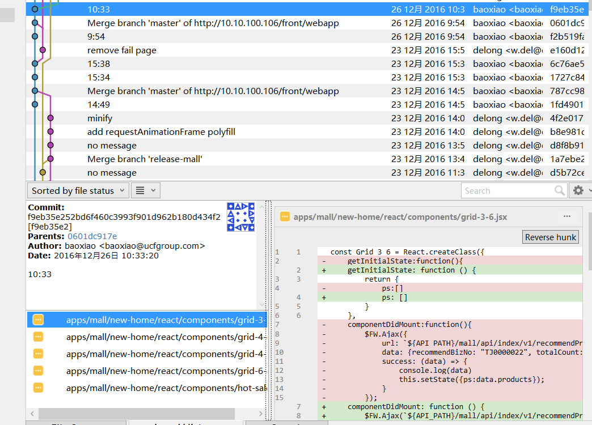

线上实践
呼叫运维...发布 专题活动 项目
发布错了!, 应该发布 front-activity
但刚发布的是 front-web 项目
项目发布是 幂等 的, 所以...不用管它
发布 front-activity
改一下专题标题, 因为:
餬2鹚??L???蟨袧猈k\揝a駈L铓
??Z残焺悎?迚ズT捴叟惆轫q?译0坻? 螬/ㄎ孢(磅o?罾
编辑 -> 提交 -> 推送到代码库 -> 呼叫运维 -> 发布
这是发布流程, 它的前提是已经通过测试
线上修复, 只是修改文字, 自测就可以了, 又不是功能修改
| 代码库 | 说明 | 项目 |
| webapp | 移动端项目 | 豆哥商城, WAP网站 |
| website | PC端项目 | 主站, 市场活动 |
| activity, game, ... | 游戏项目, 老专题项目, 等等 | |
| 代码库 | 说明 | 项目 | ||||
| webapp | 移动端项目 |
|
||||
| website | PC端项目 |
|
||||
| 代码库 | 说明 | 项目 | ||||
| webapp | 移动端项目 |
|
||||
| website | PC端项目 |
|
||||
develop -> master -> release-*
可以先在个人分支上开发, 完成后合并到 develop分支| 任务周期 | 开发分支 | 测试分支 | 发布分支 |
| 月任务 | develop | master | release-* |
| 周任务 | master | master | release-* |
| 紧急任务 | release-* | -- | release-* |
| 实验性项目 | my-branch | my-branch | -- |
非常必要!
| 审查方法 | 优点 | 缺点 |
| 自动审查 xxx Lint库 | 速度快, 覆盖全, 标准化 | 检查过于严格, 不能因时而异 |
| 开发者交叉review | 社会主义好, 共同致富 | 看不懂, 不想看, 没时间 |
| 审查官 review | 充分发挥人的优势, 保证代码的高质量 | 人性的弱点 体现到了代码上 |
目前Web前端采用的是人工审查
一个程序员式的孤独夜晚 在xxx项目中发现问题
review中发现了问题, 那就?
根据反馈的 提交版本号, 查到修改代码
 再最终审核一下, OK, 通过原因一: SVN的分支操作不够灵活
原因二: SVN是集中式项目管理
围绕 git 展开的工作方法, 流程
目标: 更高效, 介绍几种主要的工作流